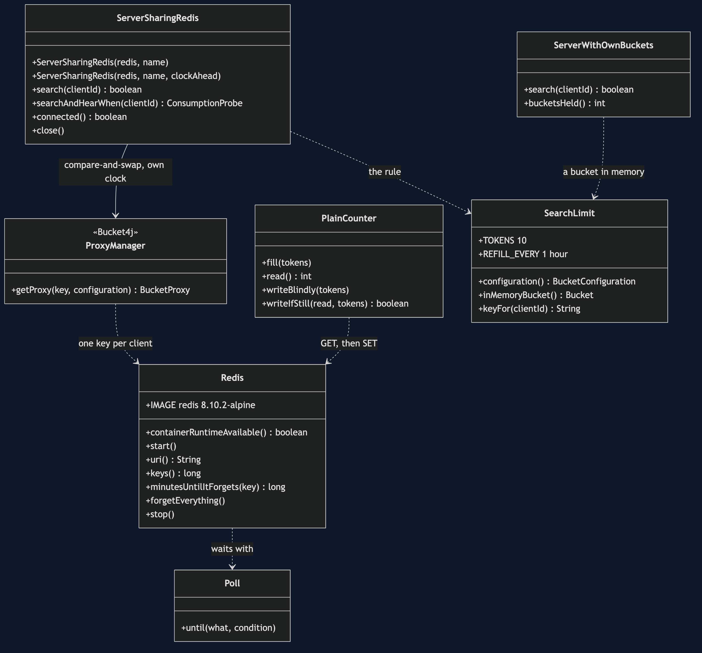
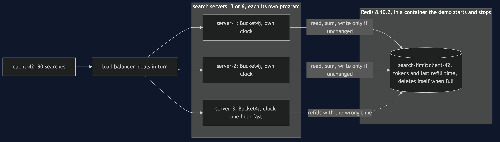
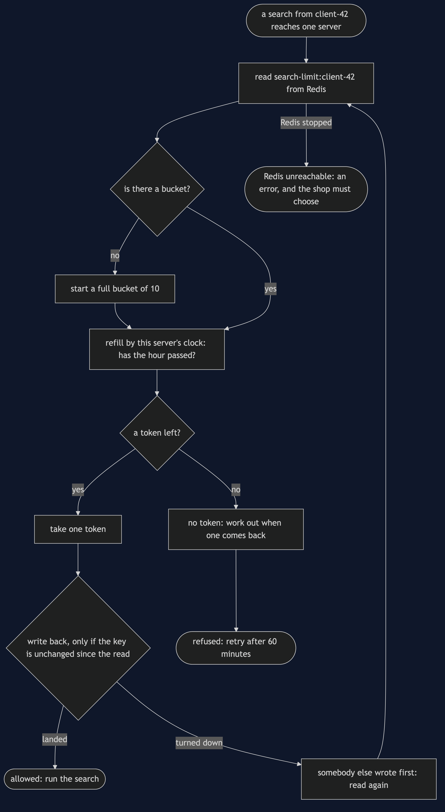
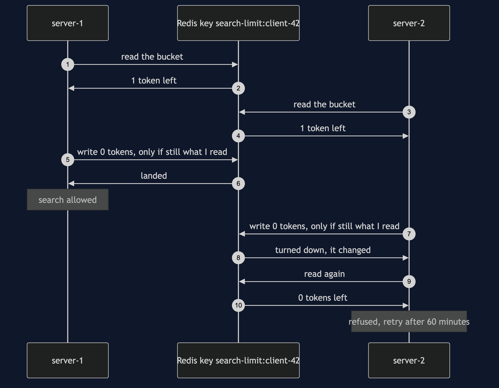
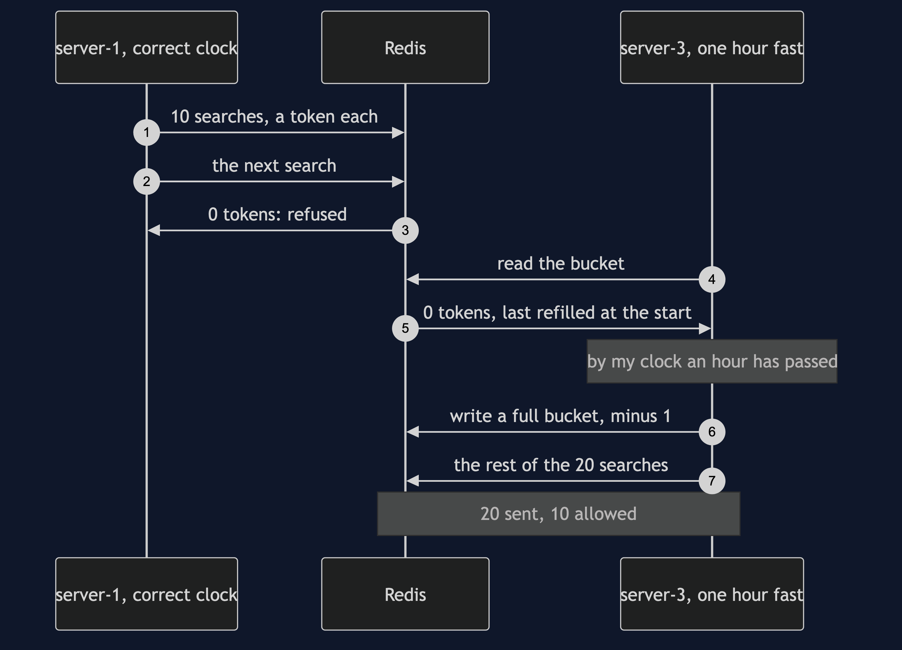
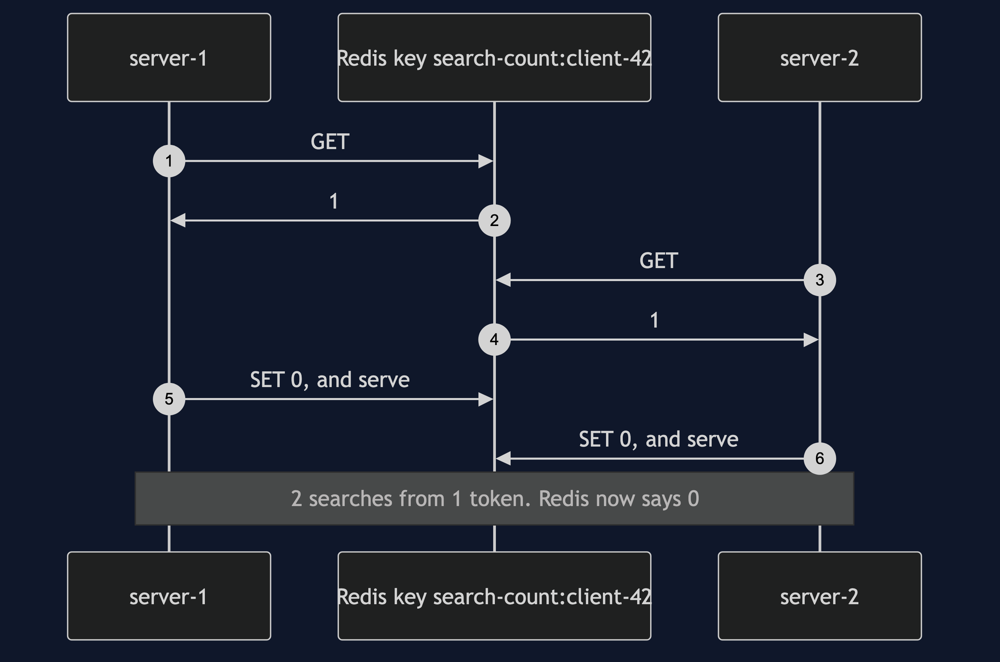
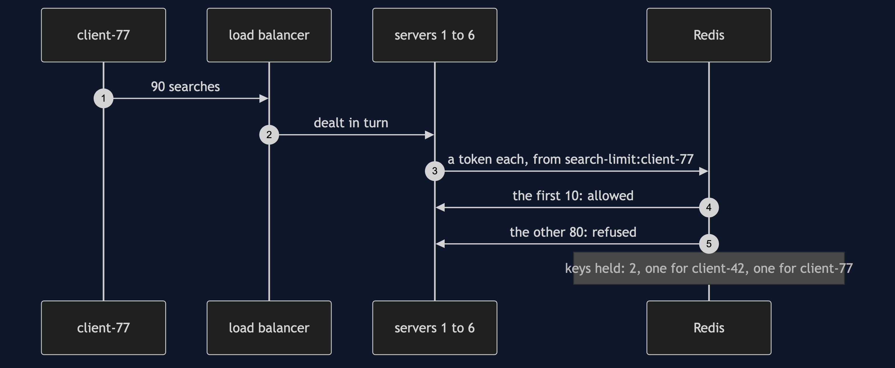
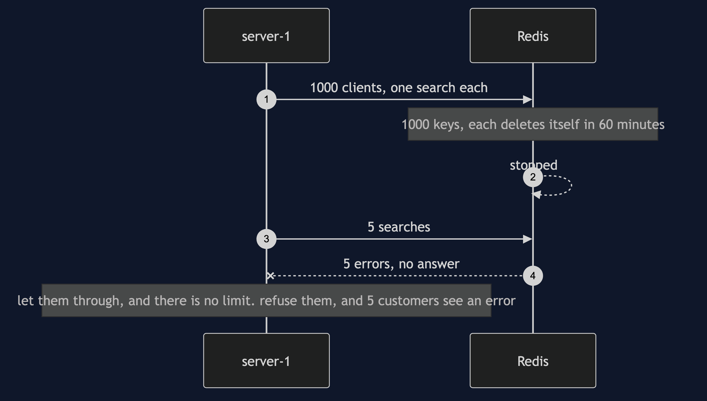

Rate Limiter with Redis Pattern
src/main/java/com/jk/explore/ratelimiterredis/
├── RedisRateLimiterDemo.java the six acts
├── Redis.java starts and stops a real Redis container; counts keys, reads expiry
├── SearchLimit.java the rule: 10 searches per client, refilled once an hour
├── ServerSharingRedis.java the pattern: one server's view of buckets kept in Redis, through Bucket4j
├── ServerWithOwnBuckets.java the twin's limiter: buckets in one server's own memory
├── PlainCounter.java a count in Redis read and written in two steps, to show why that fails
└── Poll.java every wait is a question asked until the answer is yesA limit kept inside each server multiplies every time the shop adds a server. Kept in Redis, it is one limit however many servers there are — but Redis only stores the bucket. The sums are done on each server, with that server's clock.
This project needs a container runtime. Docker Desktop, or anything Docker-compatible, must be running before you start. The demo brings a Redis server up in a container and takes it down again at the end; nothing is installed and nothing is left behind. With no runtime, the demo prints two sentences saying what to do, and stops, rather than a stack trace.
This project is the real-infrastructure version of the plain-Java Rate Limiter project in this course. That project built a token bucket in plain Java, inside one program, and ended by showing that three servers with a bucket each let three times the limit through. This one moves the bucket into Redis, using Bucket4j, the Java rate-limiting library, so that every copy of the shop's search service spends from the same bucket.
Run
./gradlew runSix acts, against a real Redis. Every number quoted below, and in every document and slide in this project, comes from this program's own output. Two runs back to back print exactly the same thing.
ONE. A bucket in each server.
the rule: 10 searches per client, refilled once an hour. client-42 sends 90 searches, dealt in turn across the servers.
3 servers, each with its own bucket: 30 allowed, not 10.
scaled out to 6 servers, the same 90: 60 allowed. every server added loosens the limit by another 10.
TWO. One bucket in Redis.
3 servers, each with its own connection to one Redis. client-42 sends 90: 10 allowed, 80 refused.
scaled out to 6 servers, client-77 sends 90: 10 allowed. Redis holds 2 keys: one bucket per client, not per server.
server-1 is restarted with empty memory. client-42's next search: refused. retry after 60 minutes.
THREE. All at the same moment.
3 servers, 30 searches each, all 90 released at the same instant on 90 threads: 10 allowed, 80 refused.
no server holds a lock. each writes its answer back only if the bucket has not changed since it read it, and reads again if it has.
FOUR. Why not just a number in Redis?
one token left. server-1 reads 1. server-2 reads 1. both write back 0 and serve: 2 searches from 1 token. Redis now says 0.
again, but each write lands only if the number is still what was read. server-2's write is turned down; it reads again, finds 0, and refuses. 1 search from 1 token, 1 refused, 1 retry.
Bucket4j does the second, on every search: its write is a small script that Redis runs in one step.
FIVE. Whose clock?
server-1 and server-2 have correct clocks. client-42 spends 10 searches through them. the next: refused.
server-3's clock runs one hour fast. client-42 sends 20 through it: 10 allowed. it thinks the hour is up, refills the bucket, and Redis stores its answer.
Redis keeps the bucket. the sums are done on each server, with that server's clock. the servers' clocks must agree.
SIX. The bill.
1000 different clients search once each: Redis holds 1000 keys. each is set to delete itself in 60 minutes, when its bucket would be full again.
Redis is stopped. 5 searches: 5 errors from the limiter, and no answer. let them through, and there is no limit at all; refuse them, and 5 real customers see an error. the shop must choose.
and every search now waits for a trip across the network to Redis before it is served. this demo needed 1 container for 6 servers.The first run downloads the Redis image, about 120 MB once unpacked, and takes longer. After that a run takes about ten seconds, most of it Redis starting.
The bucket refills once an hour, not once a second as in the twin. That is deliberate: the demo runs for a few seconds, so no token comes back while it runs, and every count above is exact on every machine. In the third act the order in which ninety threads reach Redis changes from run to run, but the count that comes out does not, and the test asserts it exactly.
Test
./gradlew test3 test classes, 15 test methods. PlainPartsTest needs nothing installed: the in-memory bucket, three servers each with their own, the rule, the poll, and the no-runtime advice. RealRedisTest starts one Redis for the whole class and asks it directly: three servers share one bucket, ninety searches at the same instant still allow exactly ten, a restarted server finds the bucket still empty and is told to come back in 60 minutes, a two-step count loses an update and a conditional write does not, a server with a fast clock refills the bucket for everyone, and Redis is told to delete a bucket once it would be full again. DemoRunsTest runs the demo and asserts every figure the documents quote.
There is no Thread.sleep anywhere under src/test. The only wait is a poll on a real condition — every thread standing at the starting gate, or the server noticing Redis has gone — with a sixty-second limit that fails the test rather than hanging it. The tests that need Redis are skipped when no container runtime is there; the rest still run.
What the simulation got right, and what it left out
This is the reason this project exists, so it comes before anything else.
What the plain-Java Rate Limiter project got right. All of the bucket. A bucket of 10 tokens, one token per search, a refusal when it is empty, a refill on a timer, a bucket per client so one greedy client cannot use up everyone's share, and a refusal that says when to come back. Bucket4j's bucket is that same bucket, and the first act runs it in each server's memory exactly as the twin did. The twin also got the failure right: its last act found that three servers, each with a bucket of 10, let 30 through. The first act here reproduces it with Bucket4j — 30 allowed, not 10 — and then scales out to 6 servers: 60.
What it left out, first: a place outside the servers. In the twin, "shared" could only mean one Java object that every caller held. Real servers are separate programs on separate machines and cannot share an object. The second act puts the bucket in Redis, a separate program that holds small values under names, and gives each of three servers its own connection. 90 searches: 10 allowed. Six servers: still 10. And when a server restarts with empty memory, the bucket is still there, still empty: the next search is refused and told to come back in 60 minutes. In the twin, a restart handed every client a full bucket.
Second: two servers can read the same last token. The twin ran one search at a time, so checking the bucket and taking a token could never be split. Two servers can split it. The fourth act fixes the order of two servers' steps by hand, so it happens on every run: both read 1 token left, both write back 0, and 2 searches are served from 1 token — and Redis, afterwards, says 0, so nothing looks wrong. The fix is a write that lands only if the value is still what was read; the second server's write is turned down, it reads again, finds 0, and refuses. Bucket4j does exactly that on every search, as a small script Redis runs in one step. It calls the approach compare-and-swap. The third act is the proof: 90 searches released at the same instant on 90 threads across 3 servers, and exactly 10 allowed.
Third, and the headline find: Redis stores the bucket, but it does not do the sums. The twin had one clock, a test clock the demo moved by hand, so time could never disagree with itself. In Bucket4j's Redis version, each server reads the bucket, works out on its own how many tokens have come back since the last visit using its own clock, and writes the answer to Redis. Redis never looks at a clock. The fifth act gives one server a clock that runs an hour fast. The bucket is empty; the honest servers refuse. The fast server decides the hour is up, refills the bucket, and lets 10 more searches through — and Redis stores that answer for every server. A limit shared by every server is only as good as the worst clock among them.
Fourth: the store can be down. The twin's bucket could not be unreachable; it was a field. The sixth act stops Redis and sends 5 searches: 5 errors from the limiter, and no answer at all. Letting them through means there is no limit; refusing them means 5 real customers see an error. Bucket4j cannot choose for you, and the shop has to. And every search, allowed or not, now waits for a trip across the network before it is served.
What the simulation had that Redis does not have to worry about. The twin's bill counted every caller as a bucket held in memory for ever. Here each bucket is a key in Redis that is set to delete itself when the bucket would be full again, because a full bucket and no bucket mean the same thing: 1000 clients leave 1000 keys, each gone within 60 minutes.
Technologies and versions
| What | Version | Why it is here |
|---|---|---|
| Java | 21 | The repository standard, via the Gradle toolchain block |
| Gradle | 9.2.1 | The wrapper in this directory; no separate install needed |
| Redis | 8.10.2 | The shared store, as the official redis:8.10.2-alpine container image; the newest release |
| Bucket4j | 8.20.0 | com.bucket4j:bucket4j_jdk17-lettuce, the newest release; the token bucket, and its Redis integration |
| Lettuce | 7.7.0.RELEASE | io.lettuce:lettuce-core, the newest release; the Redis client Bucket4j talks through |
| Testcontainers | 2.0.5 | org.testcontainers:testcontainers; starts and stops the Redis container from inside the demo, on a random free port |
| slf4j-simple | 2.0.17 | Logging for the libraries above, turned off so the demo's own output is the only output |
| JUnit 5 | 5.10.2 | Test runner |
| A container runtime | Docker 24 or later, or compatible | Runs Redis. Must be running before you start |
Nothing is held back: every version is the newest generally available release. Bucket4j's Lettuce module is itself compiled against an older Lettuce 6 line and leaves the client for the application to supply; it runs unchanged on Lettuce 7.7.0, which the tests confirm. Testcontainers 2 has no Redis module, so the core library's generic container is used. See docs/dependencies.md and docs/prerequisites.md.
Learning Material
| Document | What it covers |
|---|---|
docs/problem-statement.md | The twin's version, and what is new |
docs/rate-limiter-with-redis-pattern-explained.md | Redis's and Bucket4j's words in plain language, and six acts |
docs/class-diagram.md | The types |
docs/architecture-diagram.md | Many servers, one Redis, and where the sums happen |
docs/data-flow-diagram.md | What one search does to the bucket in Redis |
docs/sequence-diagram.md | Written for a listener with the screen off |
docs/uml-diagram.md | Four sequences |
docs/animation.html | The six acts in a browser |
docs/prerequisites.md | What you need installed, and what you need to know |
docs/session.md | A one-hour taught session |
docs/dependencies.md | What Redis, Bucket4j, Lettuce and Testcontainers are, what they cost, and that skipping this project loses none of the pattern |
docs/spec.md | The generated specification |
docs/youtube.md | Title, description and chapters |
The pattern in one picture

Where each piece sits

How one request moves

Who calls whom, in order

All four sequences




Video
Built from video/scenes.py by video/build_video.sh. The rendered file is not committed; see the repository README for why.
Where you have already met this
Every public API that answers "429 Too Many Requests" when it is run on more than one server: GitHub, Stripe, and the checkout of any shop that sits behind a load balancer. Bucket4j over Redis is one common way to build it in Java; Spring Cloud Gateway's Redis rate limiter, Envoy's global rate limit service, and NGINX Plus's shared zones are the same idea — the count lives outside the servers — built by other people.
When this is too much
If the shop runs on one server, the twin's in-memory bucket is exact, free and has nothing to go down. If a limit only needs to be roughly right, a bucket per server with the limit divided by the number of servers is often good enough and costs no network trip. A shared store earns its place when there are many servers, the count changes as they scale, and the limit has to be the same number however many there are.
Where this sits
This project pairs with the plain-Java Rate Limiter project in this course, and is the real-infrastructure version in micro-services-design-patterns.